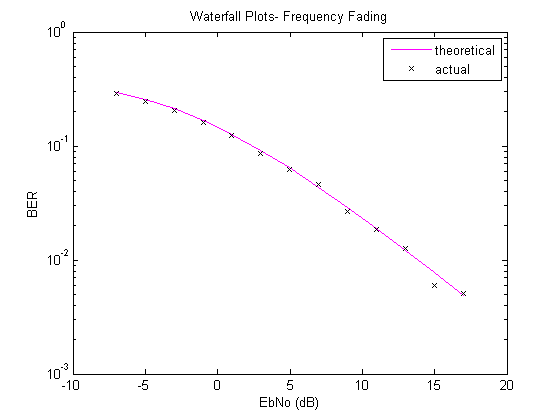
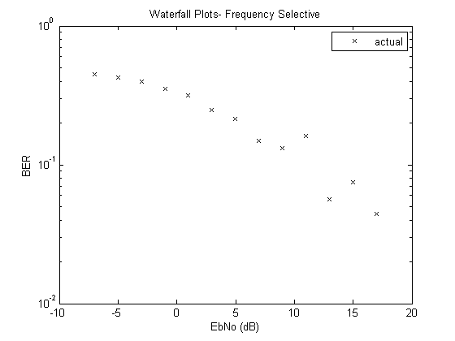

Wireless Comms mini Matlab 2
close all;
SNR = -4:2:20;
BER_flat=zeros(length(SNR));
BER_sel=zeros(length(SNR));
n=3072;
m=4;
delayVector = [0 1 2 3 4] * 1e-5;
gainVector = [0 -4 -6 -9 -14];
rchan_flat=rayleighchan(1e-5,1e4);
rchan_flat.StoreHistory = 1;
rchan_flat.StorePathGains = 1;
rchan_sel=rayleighchan(1e-5,1, delayVector, gainVector);
rchan_sel.StoreHistory = 1;
rchan_sel.StorePathGains = 1;
EbNo = SNR -10*log10(log2(m));
eq = dfe(5, 5, rls(.99));
eq.SigConst=qammod(0:3,4);
bers=zeros(1,10);
for k=1:length(SNR)
X=randi([0 m-1],1,n);
Y=qammod(X,m);
A=filter(rchan_flat,Y);
A = awgn(A, SNR(k),'measured');
Ae=A./rchan_flat.PathGains.';
Z=qamdemod(Ae,m);
BER_flat(k)=biterr(Z,X)/(2*n);
for kk=1:50
As=filter(rchan_sel,Y);
As = awgn(As, SNR(k),'measured');
Ase=equalize(eq,As,Y(1:300));
Zs=qamdemod(Ase,m);
bers(kk)=biterr(Zs,X)/(2*n);
end
BER_sel(k)=mean(bers);
end
figure
semilogy(EbNo,berfading(EbNo,'qam',4,1),'m-');
hold on;
semilogy(EbNo, BER_flat,'kx');
xlabel('EbNo (dB)')
ylabel('BER')
title('Waterfall Plots- Frequency Fading')
legend('theoretical', 'actual')
figure
semilogy(EbNo, BER_sel,'kx');
xlabel('EbNo (dB)')
ylabel('BER')
title('Waterfall Plots- Frequency Selective')
legend('actual')
 